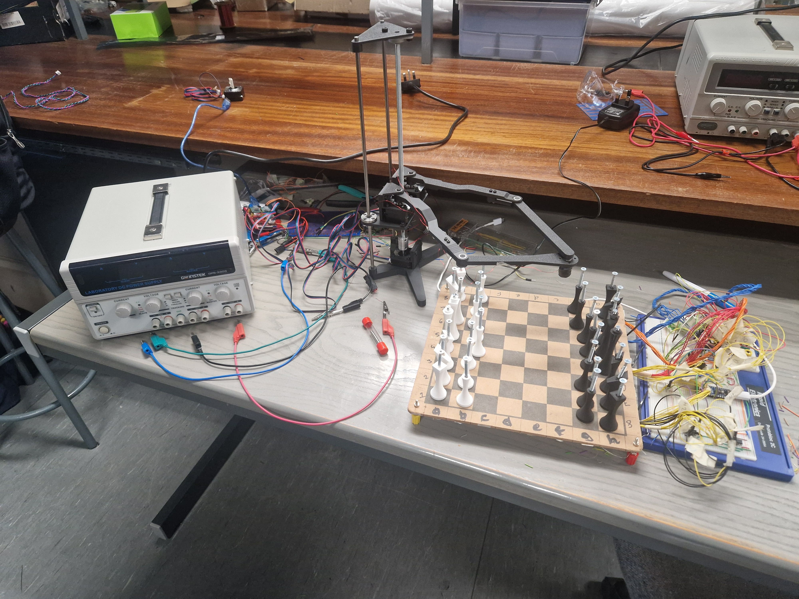
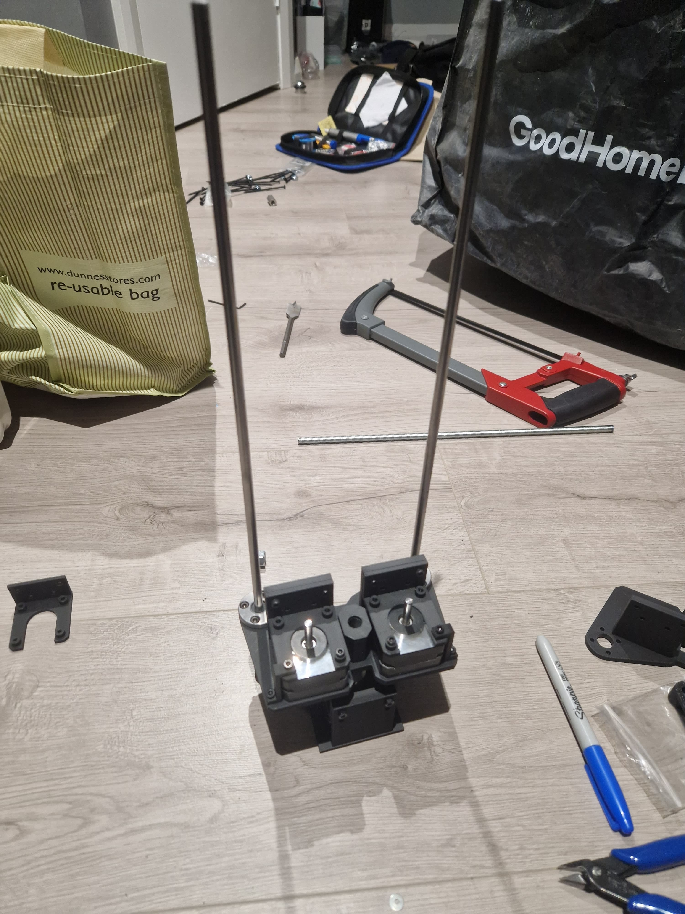

The RoboChess project began as an initiative by my classmate Joe Biju, supported by the UCD Electrical Engineering Society. The vision was to create a smart chessboard that could detect piece positions in real-time, allowing players to compete against an AI in a physical game of chess. Joe focused on building the sensing system using a matrix of Hall effect sensors beneath the board.
As the project progressed, the challenge became: how would the AI physically move the pieces? That's where I stepped in. I proposed using a robotic arm that could pick and place pieces accurately. After exploring different arm mechanisms, I discovered the dual-SCARA arm, which is a parallel robot arm configuration that is ideal for fast and precise planar motion. I designed the entire system from scratch to allow movement in three axes, enabling the arm to reach any square and lift pieces vertically with minimal complexity.
To enable physical movement of chess pieces on the board, I designed a custom robotic arm based
on a dual-SCARA configuration. The SCARA (Selective Compliance Assembly Robot Arm) mechanism was
chosen for its speed, planar precision, and simplicity in kinematic control. The dual arm layout
consists of two symmetrical linkages, each driven by a stepper motor mounted at the base. This
allowed coordinated motion in the XY plane.
The two arms join at the end effector which can be lowered and raised along the Z-axis
using a vertical leadscrew driven by a third stepper motor. This Z-axis mechanism enables the arm
to lift and place chess pieces without disturbing nearby ones. In order to grip onto the chess
pieces, I implemented a homemade electromagnet, which was built by winding copper wire around a
steel bolt. By embedding screws into each of the chess pieces, the electromagnet was able to pick
up the pieces by running a current through the copper wire, and dropping the pieces was done by
switching the electromagnet off.
Working on the RoboChess project was a rewarding experience that pushed me to grow both
technically and creatively.
Here's what I took away from the project:
Mechanism Design & Kinematics:
I gained hands on experience with designing parallel linkages, understanding constraints
and working around that, and solving inverse kinematics for precise control of the end effector.
Electromagnetics:
Working on a project that relied on hall effect sensors, and building my own electromagnet
taught me the fundamentals of magnetics and fields.
CAD & Prototyping:
I sharpened my CAD skills by designing and assembling a full robotic system, from motor mounts
to structural supports, and realising the importance of the tiniest differences in tolerances.
Creative Problem Solving:
The process of selecting the right arm type, choosing materials, and integrating motion with
functionality was a constant back and forth of experimentation and refinement.
Interdisciplinary Collaboration:
Working alongside an electronics focused teammate reminded me how powerful and important cross
discipline teamwork id, especially when blending software, sensing, and mechanical systems into
a single system.
Overall, this project boosted my confidence in building functional mechatronic systems from scratch
and reinforced my passion for robotics and design engineering.
As with any hands on engineering project, the journey of building the RoboChess arm came
with its fair share of obstacles. These challenges not only tested my problem solving skills
but also taught me important lessons in design:
Tight Tolerances:
Small errors made a big difference. I had to constantly tweak my CAD models down to the millimetre
to ensure bearings fit properly, shafts slid smoothly, and guide rods fit with just the right amount
of friction. It was a reminder that CAD perfection doesn't always translate to real world accuracy,
especially with 3D printing tolerances.
Designing for 3D Printing:
I learned to think like a printer. Overhangs, steep slopes, and unsupported angles had to be
considered in each design. Some parts needed to be split into multiple components, printed separately,
and then assembled, all to avoid warping or poor surface quality, or even just to fit on the printer bed.
Structural Forces & Centre of Gravity:
As the arm extended and retracted, I noticed how forces shifted and how the system's centre of gravity moved.
This forced me to look at the frame and improve how loads were distributed to avoid oscillations or tipping moments.
Each problem pushed me to be more mindful, iterative, and cross disciplinary in my thinking. In the end,
overcoming these issues made the project more rewarding and the design much better.


rayfoysal@gmail.com
+353 85 103 1313 (IE)